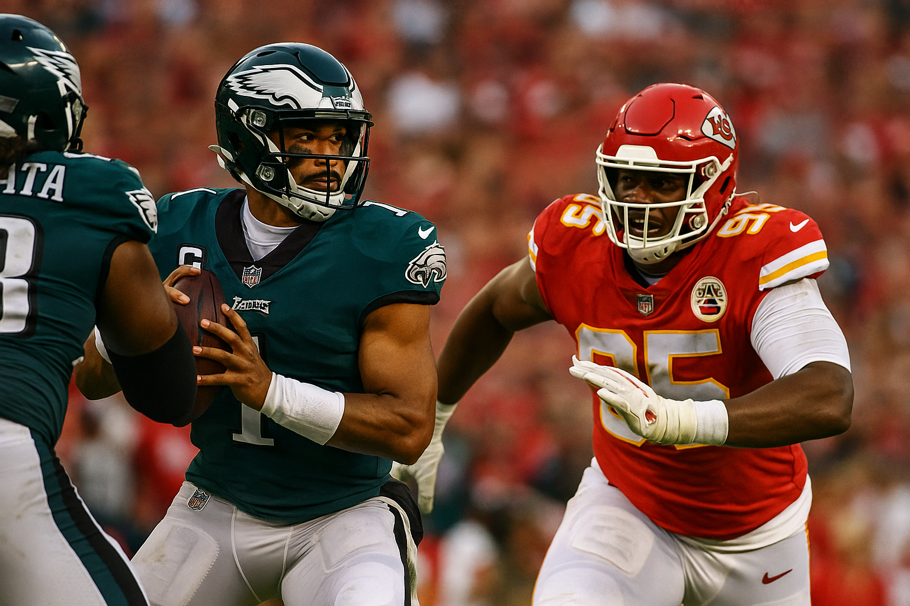
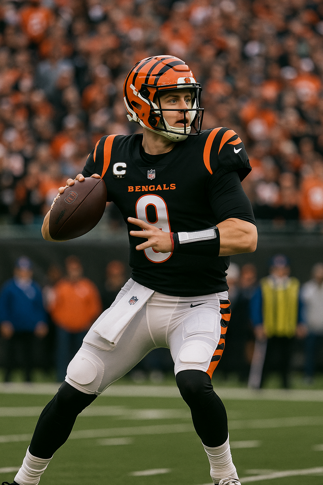

Thursday Night Football Deep Dive: Ravens at Dolphins
Posted: October 30, 2025, 2:00 PM ET
Thursday Night Football brings us a matchup between two desperate teams trying to salvage their seasons. The Baltimore Ravens travel to Hard Rock Stadium to face the Miami Dolphins in a game where both teams enter with losing records and dwindling playoff hopes. This isn't the primetime showcase anyone expected in October, but it's loaded with storylines, statistical intrigue, and implications for the rest of the 2025 season.
The Big Picture: Two Teams at Crossroads
Baltimore sits at 2 and 5, a record that feels impossible given the talent on their roster. The Ravens are third in the AFC North and 0 and 2 on the road this season, which makes this trip to Miami even more critical. They're coming off a 30 to 16 victory over the Chicago Bears that snapped a losing streak, but they remain well below expectations. Miami is somehow worse at 2 and 6, sitting third in the AFC East and 1 and 2 at home. The Dolphins just rolled Atlanta 34 to 10, so they're coming in with some momentum despite their terrible record.
The spread has Baltimore favored by 7.5 points, with 52 percent of the betting public backing the Ravens. The total sits at 51 points, which is notably high for a Thursday night game where teams typically struggle offensively due to short preparation time. The market is telling us that despite both teams' defensive issues, there's confidence in the offenses to move the ball.
Lamar Jackson Returns: The Game Changer
The biggest storyline is Lamar Jackson's return from a three game absence due to a hamstring injury. Jackson is no longer listed on the injury report and will start for Baltimore after missing critical games. The two time MVP has been practicing at full strength and told reporters he's 100 percent healthy. Through the games he played this season, Jackson threw 10 touchdown passes with just one interception, showing he can still be surgical when healthy.
Jackson's return changes everything for Baltimore's offense. When he's on the field, he's a legitimate dual threat who makes defenses account for him on every snap. Miami's defense ranks near the bottom of the league in multiple categories, and Jackson's mobility will exploit their inability to contain mobile quarterbacks. The Ravens had their full 53 man roster available for Tuesday's practice, which is the first time all season they've been this healthy heading into a game.
Derrick Henry: The Workhorse Back
Running back Derrick Henry has been one of the few bright spots for Baltimore this season. He's rushed for 510 yards with six touchdowns through seven games, and he's just 67 yards away from reaching 12,000 career rushing yards. Henry is averaging solid yardage per carry and remains a punishing downhill runner who wears defenses down in the second half. Against a Miami run defense that's been inconsistent, Henry should see heavy volume and create opportunities through play action.
The combination of Jackson and Henry gives Baltimore one of the most dangerous rushing attacks in football when both are healthy. Miami will have to commit extra defenders to stop the run, which opens up the passing game. If the Ravens can establish Henry early and force Miami into obvious passing situations, they'll control the game flow.
Miami's Quarterback Situation
Tua Tagovailoa will start for Miami despite being listed on the injury report with a thumb issue. Through eight games this season, Tua has thrown for 1,518 yards with 15 touchdowns and 10 interceptions. That touchdown to interception ratio is concerning for a veteran quarterback, especially the 10 picks. Even more troubling is Tua's performance on passes in the middle of the field. He's completing just 9 of 19 attempts on throws of at least 11 air yards in the middle, and he's thrown 5 of his 10 interceptions on those attempts. That tells you Tua is forcing throws into coverage and making bad decisions under pressure.
The Dolphins beat Atlanta 34 to 10 last week, and Tua threw four touchdowns in that game. But Atlanta's defense is one of the worst in football, and Baltimore is a significant step up in competition. If the Ravens can generate pressure and force Tua into difficult throws, the turnovers will come. Miami's offensive line has struggled to protect him consistently, which plays right into Baltimore's hands.
Miami's Injury Concerns
The Dolphins are dealing with significant injury issues heading into Thursday night. Starting tight end Julian Hill has been ruled out with an ankle injury. Starting safety Ashtyn Davis is doubtful with a quadricep issue. Four more Dolphins are questionable: starting linebacker Bradley Chubb with shoulder and foot problems, wide receiver Dee Eskridge with a shoulder injury, cornerback Jason Marshall Jr with a hamstring injury, and safety Ifeatu Melifonwu with a thumb injury.
Those injuries hit Miami's defense hardest, particularly in the secondary and linebacker corps. Baltimore's passing attack should be able to exploit the depth issues, especially if Jackson has time to scan the field. Miami's already thin defense becomes even more vulnerable when key starters are out or limited.
Historical Context and Matchup Trends
Baltimore is 2 and 5 against the spread this season, which means they're not meeting market expectations. They're 0 and 2 ATS on the road, which creates skepticism about laying 7.5 points in a hostile environment. Miami is 4 and 4 ATS overall and 2 and 1 ATS at home, which suggests they play competitive football in front of their crowd even when losing. Thursday night games historically favor the home team due to short travel and preparation advantages.
The total of 51 points is the highest for any Thursday night game this season. Both teams rank near the bottom in defensive efficiency, and both offenses have shown they can score when clicking. Baltimore's games have trended higher scoring all season, and Miami just hung 34 points on Atlanta. The conditions are set for an offensive shootout if both quarterbacks protect the football.
Key Matchups to Watch
The battle in the trenches will determine this game. Can Miami's defensive line generate pressure on Jackson without blitzing, or will they need to bring extra rushers and risk getting beat on the edges? Baltimore's offensive line has been solid in pass protection, and if Jackson has time, Miami's secondary doesn't have the personnel to cover Ravens receivers for extended plays.
On the flip side, can Baltimore's defense force Tua into mistakes? The Ravens need to generate pressure up the middle and make Tua uncomfortable. If they can get him rattled early and force a couple turnovers, Miami's offense will struggle to keep pace with Baltimore's balanced attack.
Special teams could also play a factor. Field position battles matter on Thursday nights when offenses are operating on limited preparation. A big punt return or a missed field goal could swing momentum in a game between two fragile teams.
The Playoff Implications
Neither team can afford another loss if they want to stay in the playoff conversation. Baltimore at 2 and 5 is already facing an uphill battle in a competitive AFC North. A loss drops them to 2 and 6 and likely eliminates any realistic playoff hopes. Miami at 2 and 6 is in the same boat. The AFC East isn't strong this year, but falling to 2 and 7 would effectively end their season in October.
For Baltimore, this is a statement game. They need to show they can win on the road and that Jackson's return stabilizes their offense. For Miami, it's about proving they can compete against quality opponents at home. Both teams are desperate, which should create an intense, physical game with playoff level urgency despite the poor records.
Final Thoughts
This game projects as a higher scoring affair than typical Thursday night matchups. Baltimore's offense should be significantly better with Lamar Jackson back at full health, and Derrick Henry provides the ground game balance to control clock. Miami's defensive injuries create opportunities for the Ravens to exploit mismatches, particularly in the passing game.
Miami needs Tua to play turnover-free football and hit explosive plays down the field. If the Dolphins can score early and force Baltimore into a pass-heavy game script, they have a chance. But Baltimore's talent advantage, health, and desperation make them the more complete team in this matchup. The 7.5 point spread reflects the Ravens' edge, though Miami's home field and Baltimore's road struggles keep this from being a double digit line.
The total of 51 points feels about right given both teams' defensive vulnerabilities and offensive capabilities. This should be a competitive game into the fourth quarter with playoff implications hanging in the balance for both franchises.
NFL Week 9 Complete Slate Breakdown: Every Game Analyzed
Posted: October 28, 2025, 2:45 PM ET
Last Updated: October 28, 2025, 2:45 PM ET
Week 9 brings a 14-game slate with playoff implications starting to crystallize across both conferences. The Colts' 7-1 start has been the surprise of the season, while traditional powers like the Ravens and Cowboys struggle to find consistency. We've broken down every matchup with real odds, current records, and key context—no picks, just the information serious handicappers need.
All odds and totals verified from ESPN and Action Network as of October 28, 2025.
Thursday Night Football - October 30
The Context: Two struggling teams meet on short rest in a must-win situation. Baltimore's 2-5 start has been shocking given their typical competitiveness, while Miami at 2-6 looks lost without consistent quarterback play. The Ravens are 5.5-point road favorites, suggesting the market still believes in their talent edge despite the poor record.
What to Watch: The 50.5 total is the highest on the slate, indicating oddsmakers expect offense despite both teams' struggles. Thursday night games historically trend under due to short preparation time, but this number suggests confidence in both offenses moving the ball. Baltimore's defense has been vulnerable all season, while Miami's pass defense ranks near the bottom of the league. This could turn into a shootout if both offenses execute.
Sunday Early Window (1:00 PM ET)
The Context: Chicago's 4-3 record has them in the playoff hunt, while Cincinnati's 3-5 start has put them in desperation mode. The Bears getting 3 points on the road is interesting given their solid record, suggesting the market respects Cincinnati's offensive firepower at home.
What to Watch: The 52.5 total is the second-highest on the slate. Cincinnati's offense has the weapons to put up points, but their defense has been exploited repeatedly. Chicago's defense will be tested against an offense that needs to start winning games to stay in playoff contention. Road dogs getting a field goal in divisional-caliber matchups often provide value.
The Context: NFC North battle with significant division implications. Detroit's 5-2 record has them atop the division, while Minnesota at 3-4 needs to start winning divisional games to stay competitive. The Lions are 4.5-point home favorites, reflecting their strong season and home field advantage.
What to Watch: Division games often play closer than the records suggest. The 47.5 total sits in the middle range, indicating a balanced expectation. Detroit's offense has been productive this season, but Minnesota's defense can create problems when they're executing. This spread could tighten as the week progresses if Vikings money comes in.
The Context: Carolina's .500 record is respectable, but facing a 5-1-1 Packers team at Lambeau is a serious test. The 7.5-point spread is substantial, suggesting Green Bay should control this game. The Packers' only loss came early in the season, and they've been one of the NFC's most consistent teams.
What to Watch: November weather in Green Bay can be a factor. The 44.5 total reflects expectations of moderate scoring in what could be challenging conditions. Seven and a half points is a key number in NFL betting—it covers both a touchdown and a field goal. Carolina would need to keep this within a score to cover.
The Context: Clear mismatch on paper with the 5-3 Chargers visiting the 1-7 Titans. The 4.5-point spread seems modest given the record disparity, but road favorites often face challenges in the NFL. Tennessee's season is essentially over, while LA is fighting for playoff positioning in a competitive AFC West.
What to Watch: The 43.5 total is on the lower end, suggesting a controlled game where the Chargers dominate possession and keep Tennessee's offense off the field. Trap game potential exists here—LA looking ahead to bigger matchups while Tennessee plays loose with nothing to lose. The spread has stayed under a touchdown, indicating some respect for home field advantage even for a struggling team.
The Context: New England's 6-2 record has been one of the season's surprises. Atlanta at 3-4 is underachieving relative to preseason expectations. The 5.5-point spread reflects the Patriots' strong home field advantage and their consistent play this season. Atlanta needs to start stacking wins to stay in the NFC South race.
What to Watch: The 45.5 total suggests a moderate-scoring game. New England's defense has been solid, while Atlanta's offense has shown inconsistency. Five and a half points is a difficult margin—it requires either a touchdown or two field goals to cover. Weather in New England in early November can impact passing games and favor the under.
The Context: San Francisco's 5-3 record keeps them in NFC West contention, while the Giants' 2-6 start has been disappointing. The 49ers are just 3.5-point road favorites despite the record difference, suggesting either respect for the Giants at home or concerns about San Francisco's road performance. Cross-country trips to the East Coast can be challenging for West Coast teams.
What to Watch: The 48.5 total indicates expectations for decent offensive production from both sides. The 49ers should move the ball against a Giants defense that's been exploited, but New York has shown they can score in spurts. Three and a half points is a key number—49ers need to win by at least a field goal to cover. Travel fatigue and early East Coast kickoff time could be factors.
The Context: This is fascinating—the 7-1 Colts are getting 3.5 points on the road against a 4-3 Steelers team. Indianapolis has been the surprise of the NFL season, but the market is showing respect for Pittsburgh's home field advantage and physical style of play. This line suggests oddsmakers believe the records might not tell the full story.
What to Watch: The 50.5 total is elevated, indicating both offenses are expected to produce. Indy's success has come from balanced offense and opportunistic defense, while Pittsburgh's physicality makes them tough at home. Getting 3.5 points with a 7-1 team is unusual—it could represent value on the Colts, or it could be a sign that their hot start is about to face a reality check against a traditional AFC power.
The Context: Denver's 6-2 start has them leading the AFC West, but they're only 1.5-point road favorites against a 3-4 Houston team. This tight line suggests a competitive game between two teams trending in opposite directions. The Broncos' defense has been their calling card, while Houston is trying to find offensive consistency.
What to Watch: The 39.5 total is the lowest on the entire slate by a significant margin. This screams defensive battle and conservative offensive game plans. Both teams have shown they can grind games out, and neither wants to make mistakes that flip field position. Under bettors will be all over this number, which could be why it's set so low—the market knows this should be low-scoring.
Sunday Afternoon Window (4:05 & 4:25 PM ET)
The Context: Jacksonville's 4-3 record has them in playoff contention, yet they're getting 1.5 points against a 2-5 Raiders team. This suggests home field advantage is the primary factor in the line. The Jaguars should be favored based on records alone, but the desert heat and Raiders' home environment keeps this tight.
What to Watch: The 44.5 total suggests a moderate-scoring game. Both teams have shown offensive capability but also defensive inconsistency. Getting points with the better team is always interesting for bettors. Road favorites of less than a field goal historically perform well, but Jacksonville is technically the dog here. This line could flip if money comes in on the Jags.
The Context: The Saints' 1-7 disaster season continues with a tough road trip to face the 5-2 Rams. The 9.5-point spread is the largest on the slate, reflecting the talent and record gap. New Orleans has been non-competitive most weeks, while LA is firmly in the NFC playoff race.
What to Watch: The 44.5 total is modest despite the big spread, suggesting expectations that the Rams will control the clock and grind this out rather than blow it open. Nine and a half points is a massive NFL spread—the Rams need to win by double digits to cover. Saints backers would argue they're getting too many points with any NFL team. LA might be looking ahead to tougher matchups and could win without covering.
The Context: This is the marquee game of Week 9—a potential AFC Championship preview. Both teams sit at the top of their divisions with identical 5-3 and 5-2 records. The Bills are 2.5-point home favorites, which is essentially a pick'em given home field advantage typically accounts for about 3 points. The market sees these teams as dead even.
What to Watch: The 51.5 total is tied for the second-highest on the slate, reflecting the offensive firepower both teams possess. Buffalo's home environment in November can be challenging, but both offenses have the weapons to score. This spread suggests whoever wins likely wins outright by a field goal or less. Both teams have Super Bowl aspirations, making this game a statement opportunity. The total suggests oddsmakers expect both defenses to be challenged.
Sunday Night Football (8:20 PM ET)
The Context: Interesting primetime matchup with the 5-2 Seahawks getting 5.5 points against the 3-5 Commanders. This line suggests Washington's home field advantage is worth significant points, or there's information about Seattle's cross-country travel and rest situation. The Seahawks should be favored based on records, but they're the dog.
What to Watch: The 46.5 total suggests moderate scoring expectations. Cross-country travel for a primetime game can be challenging, and Seattle may be playing their third road game in four weeks depending on their schedule. Five and a half points with the better team is intriguing. Washington needs wins to stay relevant in the NFC East race, which could create extra motivation. The spread seems inflated for a 3-5 team hosting a 5-2 team.
Monday Night Football (8:15 PM ET)
The Context: Arizona's 2-5 start has been disappointing, while Dallas at 3-4-1 hasn't met expectations either. The Cowboys are just 1.5-point home favorites in a primetime spot, suggesting the market sees these teams as nearly equal despite Dallas being at home. Both teams desperately need wins to salvage their seasons.
What to Watch: The 54.5 total is the highest on the entire Week 9 slate by a significant margin. This suggests both teams will push tempo and both defenses have serious vulnerabilities. Dallas playing at home in primetime typically means offensive fireworks, and Arizona has shown they can score in bunches. The slim spread indicates a close, high-scoring game. This could be the over play of the week given both teams' defensive struggles and offensive capabilities.
Week 9 Betting Market Overview
Totals Analysis: The slate features a wide range of totals from Denver-Houston's 39.5 (defensive grind) to Arizona-Dallas' 54.5 (offensive shootout). The average total across all 14 games sits at 47.2, which is right in line with typical NFL scoring expectations. Three games have totals above 50 (Ravens-Dolphins 50.5, Colts-Steelers 50.5, Bears-Bengals 52.5, Chiefs-Bills 51.5, Cardinals-Cowboys 54.5), indicating oddsmakers expect offensive production in those matchups.
Spread Distribution: The largest spread is Saints +9.5 at the Rams, while five games feature spreads of 3 points or less (Bears +3, Jaguars +1.5, Cowboys -1.5, Broncos -1.5, Chiefs +2.5). These tight spreads suggest competitive games where either side has a legitimate chance to win outright. Road favorites are rare this week, with most favorites playing at home.
Key Numbers: Several spreads sit on crucial NFL numbers—3, 3.5, 4.5, 7, and 7.5 appear multiple times. These are the most common margins of victory in NFL history, making them critical for bettors. Games landing on 3 or 7 create push opportunities, while half-point spreads eliminate that possibility but may offer less value.
Situational Spots & Trends
Home Dogs: The Seahawks (+5.5) and Dolphins (+5.5) are the only significant home underdogs this week. Wait, that's wrong—the Seahawks are the road team. Let me verify: Miami (+5.5 at home vs Ravens), Washington is actually favored over Seattle despite worse record. Home dogs typically perform well against the spread in the NFL, making these spots worth monitoring.
Cross-Country Travel: The 49ers and Seahawks both make East Coast trips, which historically creates challenges for West Coast teams with 10 AM body clock kickoffs. San Francisco is a small road favorite (-3.5), while Seattle is actually getting points (+5.5) despite their better record.
Division Games: Vikings-Lions is the only true division matchup this week. Divisional games typically play closer than overall records suggest, as teams know each other well and coaching staffs have extensive film on opponents.
Desperation Spots: Several teams facing must-win scenarios: Ravens (2-5), Bengals (3-5), Cowboys (3-4-1), and Cardinals (2-5) all need victories to stay in playoff contention. Teams with their backs against the wall often play with extra urgency, but they're also more prone to pressing and making mistakes.
Final Thoughts
Week 9 presents a balanced slate with elite matchups (Chiefs-Bills), potential blowouts (Saints-Rams), and everything in between. The key is identifying where the market may have mispriced teams based on records versus actual performance. The Colts getting 3.5 points at Pittsburgh despite being 7-1 stands out as the most intriguing line of the week.
Weather will be a factor in several locations as November football arrives. Monitor forecasts for Buffalo, Green Bay, New England, and Pittsburgh throughout the week. Wind speeds above 15 mph can significantly impact passing games and totals.
As always, shop for the best available number across multiple sportsbooks. A half-point difference on a spread or total can be the difference between a win and a loss. Trust your process, focus on games where you have a clear analytical edge, and avoid forcing action on every game just because it's on the slate.
Week 8 Sunday Slate Preview: Every Game, Every Angle
Posted: October 26, 2025, 10:30 AM ET
Week 8 brings another loaded Sunday with 11 games spanning the early and late windows. We've got division clashes, revenge spots, and a few lines that caught sharp movement overnight. Here's the full rundown with context on each matchup—no fluff, just what matters for handicapping.
Early Window (1:00 PM ET)
Chicago Bears (4-2) at Baltimore Ravens (1-5)
Line: Ravens -6.5 | Total: 49.5
Baltimore's been a disaster through six weeks, but that record doesn't tell the whole story. They've lost close games and dealt with injuries that are finally clearing up. Chicago's running the ball well, but their passing attack remains limited. The Ravens' offense should get back on track here—Lamar's been pressing, but hosting a Bears secondary that's vulnerable deep could be the cure. The total feels inflated given Chicago's pace. Baltimore wins, but 6.5 is a number that makes you think twice.
Buffalo Bills (4-2) at Carolina Panthers (4-3)
Line: Bills -7 | Total: 46.5
Buffalo's been money on the road, and Carolina's quietly put together a respectable season but hasn't faced this level of firepower at home yet. Josh Allen's playing at an MVP level, and the Bills' offensive weapons are healthy. Carolina keeps games competitive, but seven feels light for a Bills team that's been covering in these spots. Buffalo should control this one start to finish.
New York Jets (0-7) at Cincinnati Bengals (3-4)
Line: Bengals -6.5 | Total: O/U TBD
The Jets are winless, and this feels like a get-right game for Cincinnati at home. Joe Burrow's been slinging it, and the Bengals desperately need wins to stay in the playoff hunt. New York's defense can make life difficult, but without offensive rhythm, they're not hanging around in shootouts. Cincy covers if they take care of business early.
Cleveland Browns (2-5) at New England Patriots (5-2)
Line: Patriots -7 | Total: 40.5
New England's quietly having a solid year, and Cleveland's been a mess offensively. The Browns +7 is getting 67% of tickets and 82% of money, which tells you the market loves the dog here. That said, New England's defense at home is legit, and the Patriots have been winning ugly all season. This total screams under—two teams that grind, limited explosive plays, and a forecast that could involve some wind. Patriots win, but the Browns hang around long enough to make this one sweat.
San Francisco 49ers (5-2) at Houston Texans (2-4)
Line: Texans -1.5 | Total: 41.5
The 49ers are dealing with a banged-up roster—Brock Purdy's status was questionable all week with toe and shoulder issues, and George Kittle's on IR. Houston gets a short number at home, which feels like a trap until you realize San Francisco's depth might finally be catching up to them. If Purdy sits, this line moves significantly. Houston's defense can create chaos, and their run game is coming together. Lean Texans, but monitor that injury report closely before kickoff.
New York Giants (2-5) at Philadelphia Eagles (5-2)
Line: Eagles TBD | Total: TBD
Division games are always tricky, but the Eagles should roll here. New York's offense has been anemic, and Philly's pass rush will feast. The Giants hung tough in their last matchup earlier this season, but that feels like a lifetime ago given how both teams have trended. Eagles big at home.
Late Window (4:05 PM & 4:25 PM ET)
Tampa Bay Buccaneers (5-2) at New Orleans Saints (1-6)
Line: Bucs -5.5 | Total: 47.5
Tampa's been one of the league's best teams, while New Orleans sits at 1-6 with significant roster issues and questionable execution on both sides of the ball. The Bucs should have the advantage across the board here, but 5.5 in a division game on the road isn't a number to take lightly—these matchups historically tighten up late. Tampa's offense has the tools to control tempo, and if they build an early lead, don't be surprised if this stays under as they lean on the run game and clock management in the second half.
Dallas Cowboys (3-3-1) at Denver Broncos (5-2)
Line: TBD | Total: TBD
Denver's defense has been the story all year, and Dallas is coming off a disappointing tie. The Cowboys' offense can move the ball, but turnovers have killed them. Denver's pass rush will test Dak, and the altitude factor is real late in games. This feels like a Broncos win, but the number will matter—anything past a field goal and Dallas becomes interesting.
Tennessee Titans (1-6) at Indianapolis Colts (6-1)
Line: Colts -14.5 | Total: TBD
Indianapolis is rolling, and Tennessee is a disaster. The Colts are 14.5-point favorites, which is massive in the NFL, but warranted here. Indy's offense is balanced, their defense is stout, and they're at home against a Titans team that can't do anything right. This screams Colts blowout—they cover the big number and probably hit the over on their own.
Sunday Night Football (8:20 PM ET)
Green Bay Packers (4-1-1) at Pittsburgh Steelers (4-2)
Line: Packers -3.5 | Total: 45.5
This is the marquee game of the weekend—Aaron Rodgers returns to face his former team. The Packers are playing great football, and Pittsburgh's been solid but unspectacular. Green Bay's -3.5 on the road in primetime feels about right. The Steelers' defense will make this competitive, but Rodgers knows this offense inside and out, and he'll have something to prove. Packers win outright, and the narrative writes itself.
Final Thoughts
This Sunday slate has a little bit of everything—blowouts, tight divisional games, and a primetime revenge narrative that'll dominate the broadcast. The key is finding edges where the market has overreacted to recent results or where injury situations create value. Keep an eye on weather reports for the Cleveland-New England game, and don't sleep on divisional underdogs getting more than a touchdown—those spots tend to be closer than the numbers suggest. Stay disciplined, monitor injury reports right up to kickoff, and trust your process.
Week 2 Full-Board Deep Dive: Every Matchup, Lines, Totals & Context
Posted: September 10, 2025, 4:55 PM ET

DraftKings lists Green Bay -3.5 with a total of 48.5. That’s a modest edge for the Packers at home in primetime and suggests both offenses are expected to move the ball.
Washington’s offense leaned on timing and early‑down throws in the opener; Green Bay’s front created pressure with four and stayed healthy across its core rotation heading into Week 2 prep.
Lambeau in September is usually calm and dry, so environment tends to favor clean execution. Short‑week travel can amplify communication issues for visiting offensive lines.
Cincinnati sits -3.5 with a total at 48.5 on DraftKings, a mid‑high total for the early window.
Jacksonville paired quick game with play‑action in Week 1 while keeping the protection plan simple. Cincinnati’s defense lives in two‑high shells and forces long drives without explosives.
Paycor can play fast when weather is warm. Expect both teams to test underneath windows and take measured shots off play‑action when safeties flatten.
DraftKings has Dallas -5.5 with a total of 44.5. Market has been steady in the -5 to -6 pocket.
The Giants’ pass protection is still the storyline. Dallas’ rush generated pressure with four in Week 1 and continues to rotate deep up front.
AT&T Stadium’s controlled environment keeps everything on schedule. This rivalry often swings on third‑and‑medium conversions and red‑zone finish rate rather than raw yardage totals.
Detroit is -5.5 at DraftKings; total 46.5. That nods to a moderate scoring expectation in a dome.
Chicago’s offense seeks smoother early‑down sequencing after a choppy opener. Detroit’s offensive line remains the identity piece for its play‑action and gap runs.
Ford Field removes weather variables. Crowd noise here has historically impacted visiting snap timing and penalties.
The Rams lay 5.5 with a total of 41.5 on DraftKings, one of the lower totals on the board.
Los Angeles leveraged motion and condensed splits in Week 1 to create easy throws. Tennessee’s reworked offense is still settling protections around a young quarterback.
Outdoor conditions in Nashville can be hot in mid‑September, which stresses defensive depth and tackling late.
Miami is a short -1.5 favorite with a 44.5 total at DraftKings, which implies a tight contest with moderate scoring.
New England’s front played the run well in Week 1 while Miami’s passing structure still forces defenses to cover every blade of grass.
South Florida humidity is a factor for substitution patterns. Special teams and hidden yards often tip these matchups in Miami.
DraftKings has San Francisco -4.5 with a 42.5 total. The number tightened earlier in the week as the QB picture came into focus.
Brock Purdy is considered a long shot for Week 2 with toe and shoulder issues, and George Kittle has been placed on injured reserve. New Orleans leans on coverage disguise and veteran safeties in passing downs.
The Superdome neutralizes weather and typically boosts operational tempo. Expect a trench‑centric game state with both teams leaning on run action.
Buffalo -7 with a 46.5 total at DraftKings is one of the larger spreads on the Week 2 card.
Buffalo exited Week 1 healthy among primary pass‑catchers and Josh Allen’s off‑script creation remains a separator. The Jets’ defense is still the backbone while their offensive line continues to settle.
MetLife winds can influence deep balls and long field goals. Patience underneath and scramble drills have been Buffalo’s answers to the Jets’ split‑safety looks.
DraftKings lists Pittsburgh -3 with a 40.5 total, one of the week’s lowest totals.
Seattle used quick game and a split backfield in Week 1. The Steelers generated pressure with four and rarely had to expose coverage with heavy blitz.
Lower totals make hidden yardage matter more. Field position and special teams tend to swing close games in this building.
Baltimore is -12.5 with a 45.5 total at DraftKings, the heaviest spread on the board.
Cleveland’s young offense needs efficient early downs to avoid Baltimore’s simulated pressures and post‑snap rotation. The Ravens’ depth on defense and diverse run game show up more at home.
Division meetings often come down to turnover margin. Baltimore’s recent series edge has leaned on short fields and red‑zone defense.
Denver -2.5 with a 42.5 total at DraftKings projects a tight, mid‑low scoring game.
Denver’s second‑level range showed up in Week 1 and the defense mixed simulated pressures on passing downs. Indianapolis uses QB run and RPO to stay ahead of the sticks.
Indoor track means fewer weather surprises. Third‑down distance and red‑zone calls will shape the outcome more than yardage volume.
Arizona -6.5 with a 44.5 total at DraftKings reflects confidence in their home offense against a Carolina unit still searching for explosive plays.
Carolina emphasized quick throws and screens in Week 1 to stabilize the pocket. Arizona mixed tempo and used multiple backs to keep leverage on linebackers.
Fast indoor surface supports pace. If turnovers stay down, third‑down execution becomes the lever for both sides.
DraftKings lists Philadelphia -1.5 with a 46.5 total for the Super Bowl LIX rematch. Kansas City being a home underdog is rare.
Kansas City is without Rashee Rice for six games and is managing Xavier Worthy’s shoulder from Week 1 in Brazil. Philadelphia’s Wednesday report included Dallas Goedert as a DNP and Landon Dickerson limited.
Kansas City’s Week 1 involved long‑haul travel to São Paulo, which compresses recovery. Recent meetings have hinged on trenches and turnover margin, not yardage alone.
Minnesota -3.5 with a 44.5 total on DraftKings. The spread toggled between -3 and -3.5 during the week.
Atlanta monitored receiver availability after Week 1. Minnesota leaned into three‑wide sets and option routes with a rookie quarterback comfortable in tempo.
U.S. Bank Stadium’s fast track and acoustics favor the home cadence. Explosive‑play prevention versus third‑and‑medium wins is the chess match.
Houston -2.5 with a 42.5 total at DraftKings indicates a lower‑variance profile under the roof.
Tampa Bay relies on four‑man pressure and match coverages; Houston’s intermediate rhythm looked sharp in Week 1 with a stable target tree.
In a controlled environment, pass‑protection and third‑down blitz pickup usually decide drive value more than raw yardage totals.
The late Monday cap has Los Angeles -3.5 with a 46.5 total at DraftKings.
Justin Herbert opened the season with vertical intent while the Raiders leaned on a physical ground game. Midweek injury notes focused on rotational defenders for both teams.
Allegiant’s fast track benefits timing routes. These AFC West games frequently swing on penalties and two‑minute execution.
Week 1 Full-Board Deep Dive: Every Matchup, Lines, Totals & Context
Posted: September 6, 2025, 11:33 PM
This master post lists every matchup on the Sunday slate and the Monday night game using the exact lines and totals you provided. We summarize the market, matchup structures, and environment for each game so you can anchor your reads before placing any wagers. No picks here—just the full analytical framework per game.
Pittsburgh @ N.Y. Jets
Sunday, Sep 7 — 1:00 PM ET — MetLife Stadium, East Rutherford, NJ
Line: N.Y. Jets -2.5 | Pittsburgh +2.5
Total: 38.0
Consensus: Jets 70% / Steelers 30%
Market & number: Jets -2.5 with a total of 38 says books expect a field-position game with limited explosives. Your consensus shows heavy interest on the Jets as a short home favorite; that often creates contrarian value on the dog, but the more important point is the scoring environment—at sub‑40, every third down and special-teams snap is magnified. If this ever touches 3, key-number dynamics change a lot, so the range around -3/+3 is critical for any side bets.
Matchup structure: Pittsburgh’s offense should emphasize early-down efficiency (under-center runs and play‑action) to keep obvious pass downs away from New York’s front. The Jets defense thrives on four‑man pressure and tight outside coverage; they force throws between the numbers. For the Jets offense, the most reliable lever is the ground game and QB movement to blunt the Steelers’ edge rush. If Pittsburgh wins first down, their simulated pressure packages create take‑away chances; if the Jets live in 2nd‑and‑5, their RPO/quick game opens up intermediate digs later.
Environment & monitoring: MetLife’s wind is the hidden variable—anything sustained above ~10–12 mph trims deep‑ball hit rates and long FG range. Light early‑day showers would favor the defenses and push coaches to punt rather than attempt long tries. OL/CB inactives swing this more than skill spots, so check the 90‑minute report for either side’s tackles and top corners before locking totals or alt spreads.
N.Y. Giants @ Washington
Sunday, Sep 7 — 1:00 PM ET — FedEx Field, Landover, MD
Line: Washington -6 | N.Y. Giants +6
Total: 45.5
Consensus: Washington 58% / Giants 42%
Market & number: Washington -6 with a mid‑40s total (45.5) places this right on a key dog number for a divisional opener. Public is on the home favorite. Historically in Week 1, dogs grabbing a full six in division hit at a solid clip because game plans are conservative and variance is higher. Any move to -5.5 reduces that cushion; any drift toward -6.5/-7 increases the tax on the favorite.
Matchup structure: The Giants’ path is quick‑game, option runs, and moving the launch point to mask protection stress—especially on the blind side. Washington’s defense wants to squeeze spacing with four‑man rush and force long fields; offensively they’re most efficient when the run game sets up shot plays off play‑action and RPO. If the Commanders consistently create 2nd‑and‑short, it opens the middle of the field versus NYG’s safeties; if New York grabs early leads, their defensive line can tee off and Washington’s sack exposure grows.
Environment & monitoring: Landover projects neutral—low winds and dry conditions—which generally favors the team with the steadier dropback plan. Track the Giants’ LT status and Washington’s right‑side OL; either downgrade changes how often coordinators need chip help and how many routes are live on 3rd down. Ref crew trends lean balanced here, so environment and protection are the real levers.
Carolina @ Jacksonville
Sunday, Sep 7 — 1:00 PM ET — EverBank Stadium, Jacksonville, FL
Line: Jacksonville -3.5 | Carolina +3.5
Total: 46.5
Consensus: Jaguars 71% / Panthers 29%
Market & number: Jaguars -3.5 with 46.5 total and a public lean to the favorite. The hook is the story—3.5 vs 3.0 matters because Week 1 games with humidity in Florida often slow in the second half, tightening margins. If the number ever snaps to -3 flat, the favorite becomes more attractive; north of -3.5 increases back‑door risk.
Matchup structure: Carolina’s new system wants wide‑zone, play‑action, and defined reads. Losing or limiting the starting LT forces heavier TE chips and condensed splits, which suppresses explosives and raises 3rd‑and‑medium frequency. Jacksonville’s offense is most dangerous when protection holds long enough for deep crossers and when they can run inside zone against light boxes. Panthers’ best counter is to win with interior penetration and force quicker decisions—Jacksonville’s pass protection was inconsistent last season on true dropbacks, which can reappear if they’re behind the sticks.
Environment & monitoring: Jacksonville heat/humidity plus pop‑up showers can introduce ball‑security and cramping issues—depth on the OL and in the secondary becomes important. Check the Friday practice participation for Carolina’s tackles and Jacksonville’s cornerback group; a late scratch on either side changes the explosive‑play calculus and your appetite for the total.
Arizona @ New Orleans
Sunday, Sep 7 — 1:00 PM ET — Caesars Superdome, New Orleans, LA
Line: New Orleans -6 | Arizona +6
Total: 43.5
Consensus: Saints 65% / Cardinals 35%
Market & number: Saints -6, total 43.5 in a dome. Indoors typically elevates efficiency and reduces variance from wind and rain; that’s why a favorite under a touchdown can carry quietly more equity than the same number outdoors. Teaser players will gravitate to -6 → -0.5; be aware of that shaping the close.
Matchup structure: New Orleans’ passing game is best when it lives in 11 personnel with motion and play‑action to create in‑breakers and YAC. Arizona’s defense wants to keep a roof on and rally to tackle; if they’re forced into single‑high to shore up the run, the Saints’ intermediate digs and seams open. On the other side, Arizona needs to avoid 3rd‑and‑long where New Orleans can heat the pocket with simulated pressure; staying ahead of schedule via early‑down runs and quick throws is essential in a noise‑inflated dome where silent counts can tilt the pass rush.
Environment & monitoring: Indoors eliminates weather but magnifies communication: crowd noise is real in New Orleans. OL cohesion and cadence matter—false starts and delay penalties are drive killers and correlate with unders and favorites. Monitor the Saints’ RB rotation and Arizona’s CB health; either one shifts the middle‑of‑field matchup and red‑zone efficiency.
Cincinnati @ Cleveland
Sunday, Sep 7 — 1:00 PM ET — Cleveland Browns Stadium, Cleveland, OH
Line: Cincinnati -5 | Cleveland +5
Total: 47.5
Consensus: Bengals 64% / Browns 36%
Market & number: Bengals -5, total 47.5 with a modest public lean to Cincinnati. In the AFC North, +5 for a home team is premium dog territory because of slower tempos and familiarity. If wind on the lake approaches double digits, the total’s true mean dips and every possession becomes worth more, which inherently helps the dog cover bands like 3–6.
Matchup structure: Cincinnati is built on explosive passing and quick‑hitting timing routes; Cleveland’s defense is disruption‑first—win with four, close windows outside, and finish with physical tackling. If the Browns force the Bengals into patient 10–12 play drives, variance swings toward Cleveland. Conversely, if Cincinnati protects well on early downs and hits a few chunk plays to Chase/Higgins‑types, they pull the Browns out of two‑high shells and the game loosens up. Cleveland’s offense is most stable when it gets run‑game efficiency to set up play‑action; falling behind early invites negative scripts they want to avoid.
Environment & monitoring: September at the lake can bring tricky crosswinds; that trims deep balls and long FGs. OL statuses on both sides, especially tackles, are more impactful than WR3/CB3 injuries in this matchup. If pregame wind reads are tame (<10 mph), the total’s ceiling is higher and live‑over entries after a slow first quarter become viable.
Tampa Bay @ Atlanta
Sunday, Sep 7 — 1:00 PM ET — Mercedes-Benz Stadium, Atlanta, GA
Line: Atlanta -1 | Tampa Bay +1
Total: 47.5
Consensus: Falcons 62% / Buccaneers 38%
Market & number: Falcons -1, total 47.5 in a likely‑closed roof. Near pick’em says the market expects comparable efficiency with situational edges (home/roof) giving Atlanta a nudge. Totals in the high‑40s indoors tend to be sensitive to red‑zone finish rates—4 FGs vs 3 TDs is the difference between clearing and stalling below the number.
Matchup structure: Atlanta’s offense works when wide‑zone marries to heavy play‑action and in‑breaking routes; Tampa’s defense historically squeezes the run with aggressive fronts and dares precision on the perimeter. For the Bucs offense, protection vs Atlanta’s edge group is the hinge—if they can keep the QB clean on 1st/2nd down, intermediate digs and slot options are live; if not, they live in 3rd‑and‑long and the roof turns from advantage to neutralizer. Explosive plays will likely come from schemed YAC rather than pure go‑balls.
Environment & monitoring: Indoors minimizes randomness; that puts more weight on third‑down distance and red‑zone play‑calling. Watch Atlanta’s left‑side OL health and Tampa’s nickel/slot CB availability—both dictate where the highest‑leverage targets go on money downs.
Miami @ Indianapolis
Sunday, Sep 7 — 1:00 PM ET — Lucas Oil Stadium, Indianapolis, IN
Line: Miami -1 | Indianapolis +1
Total: 46.5
Consensus: Dolphins 62% / Colts 38%
Market & number: Dolphins -1, total 46.5 in a dome/potential roof setting. Practically a pick’em suggests the market views Miami’s explosiveness and Indy’s run/tempo counter as offsetting. Any drift to MIA -2.5 would change the calculus for teaser and ML parlay exposure; conversely, a flip to IND -1 would signal sharper Indy interest.
Matchup structure: Miami stresses leverage with motion, speed, and horizontal stretch; Indy’s best defensive response is to reroute at the snap and win underneath with rally tackling. On offense, the Colts keep games on schedule with run efficiency and RPOs, forcing lighter boxes and generating makeable 3rd downs. If Miami jumps ahead, the Colts’ dropback game must hold up against pressure packages; if Indy dictates pace and possession, Miami may see fewer total plays than they prefer.
Environment & monitoring: Indoors keeps things clean, so OL continuity, WR availability, and CB health are the real swing factors. A thin corner group versus Miami speed translates directly to explosives; an Indy OL shuffle reduces their margin for error on 3rd‑and‑medium. Monitor final inactives for both secondaries before totals and alt lines.
Las Vegas @ New England
Sunday, Sep 7 — 1:00 PM ET — Gillette Stadium, Foxborough, MA
Line: New England -2.5 | Las Vegas +2.5
Total: 44.5
Consensus: Patriots 57% / Raiders 43%
Market & number: Patriots -2.5, total 44.5 with cooler, possibly damp Foxborough conditions. A sub‑45 total with a short home favorite and cross‑country traveler is the quintessential grinder profile. If weather intensifies near kickoff, the true total drifts lower and every point on the spread is worth more.
Matchup structure: New England’s clearest edge is on defense and special teams; if their offense can avoid negative plays on early downs, they can pin the Raiders deep and stack field position. Las Vegas can still pop explosives, but they’re more sensitive to protection and footing—if the surface is slick, timing on outbreaking routes suffers. Expect a conservative fourth‑down posture from both staffs in a low‑40s total unless analytics dictate otherwise near midfield.
Environment & monitoring: Wind and light rain favor the home team used to the field, but it’s not an automatic under. Track kicker statuses and any OL scratches—either could shift game‑state decisions (long FGs vs punts) and create live‑bet windows after the first couple of drives.
San Francisco @ Seattle
Sunday, Sep 7 — 4:05 PM ET — Lumen Field, Seattle, WA
Line: San Francisco -1 | Seattle +1
Total: 43.5
Consensus: 49ers 62% / Seahawks 38%
Market & number: 49ers -1, total 43.5 outdoors in a potential light‑rain window. A near pick’em in the NFC West usually boils down to which team handles 3rd‑and‑medium better and avoids turnovers; totals in the low‑40s bring every short field into play.
Matchup structure: San Francisco’s offense manufactures YAC via motion, bunches, and crossers; Seattle must tackle in space and win on the edges to keep the 49ers behind the sticks. On the other side, Seattle’s pass game is at its best when the QB can work off boot and half‑rolls, mitigating pure dropbacks against San Francisco’s rush. If the Seahawks are forced into longer-developing concepts on 3rd down, SF’s rush/coverage marriage becomes decisive.
Environment & monitoring: Lumen Field noise adds penalties and compresses snap timing for visitors. Any rain increases the value of tackling and ball security and nudges the total down. Check Seattle’s QB/OT statuses and San Francisco’s RB usage notes—both change how often each side can stay on schedule.
Tennessee @ Denver
Sunday, Sep 7 — 4:05 PM ET — Empower Field at Mile High, Denver, CO
Line: Denver -8 | Tennessee +8
Total: 42.5
Consensus: Broncos 74% / Titans 26%
Market & number: Broncos -8, total 42.5 at altitude. Big favorite with a modest total means books expect Tennessee to struggle to 20 points or fewer while Denver’s defense and field position carry the day. Because of altitude fatigue, fourth quarters in Denver can swing spreads—both in blowouts and back‑door covers.
Matchup structure: Denver’s clearest advantage is defensive: tight coverage plus a pass rush that usually wins with games and late movement. Offensively they’re best when they manufacture easy throws off run action and protect the ball. Tennessee needs to stay on script with run efficiency and manageable third downs; if they face 3rd‑and‑7+ repeatedly, Denver’s simulated pressure looks create sacks and punts. Explosives are likely limited unless coverage busts occur late.
Environment & monitoring: Warm with possible storms is typical; humidity plus altitude drains OL/DL rotations. Track Titans secondary health and Broncos’ OL continuity—either affects late‑game stamina and your tolerance for alt lines and live entries.
Houston @ L.A. Rams
Sunday, Sep 7 — 4:25 PM ET — SoFi Stadium, Inglewood, CA
Line: L.A. Rams -3 | Houston +3
Total: 42.5
Consensus: Rams 58% / Texans 42%
Market & number: Rams -3, total 42.5 indoors at SoFi. A short home favorite with a lowish total suggests the market expects long fields and a handful of high‑leverage red‑zone trips to decide it. Three is the key: any move off -3 matters far more than juice changes at the current number.
Matchup structure: The Rams’ system uses motion and condensed splits to create crossers and leverage; Houston’s defense must pass off routes cleanly or Stafford‑style quarterbacks will find throwing windows between zones. Houston’s offense balances quick game with layered shots; if the Rams’ rush wins on early downs, Houston’s explosives shrink and drives lengthen. Conversely, if Houston protects, their intermediate game can string multiple scoring drives and pressure the Rams into more aggressive fourth‑down decisions.
Environment & monitoring: Indoors neutralizes weather; this becomes a protection/coverage chess match. Watch the Rams’ LT/RT statuses and Houston’s CB availability—either side’s downgrade is a direct input to explosives and to whether the total has value up or down.
Detroit @ Green Bay
Sunday, Sep 7 — 4:25 PM ET — Lambeau Field, Green Bay, WI
Line: Green Bay -2.5 | Detroit +2.5
Total: 47.5
Consensus: Lions 57% / Packers 43%
Market & number: Packers -2.5, total 47.5 at Lambeau. Public leaning to the road dog while the home team lays less than a field goal is a classic tug‑of‑war spot. Totals near 48 outdoors depend heavily on red‑zone touchdown rate—field goals stall overs, while one 50‑yard homer early can flip game scripts quickly.
Matchup structure: Detroit’s interior run game plus heavy play‑action stress the middle of defenses; Green Bay’s best counter is to win early downs, set edges, and force 3rd‑and‑7 where their pass rush and disguised coverages hold up. The Packers offense is at its best when it mixes quick game with shot plays off under‑center looks; if they protect on early downs, intermediate crossers to the slot and TE become chain‑movers. Turnover margin has been decisive in recent meetings—whoever avoids the big mistake usually owns the second half.
Environment & monitoring: September in Green Bay is typically cool and calm; modest wind won’t kill the deep ball. OL health (especially tackles) on both sides and Detroit’s secondary depth dictate the explosive‑play count. If inactives thin Detroit’s corners, Green Bay’s perimeter matchups improve materially at a sub‑3 number.
Baltimore @ Buffalo
Sunday, Sep 7 — 8:20 PM ET — Highmark Stadium, Orchard Park, NY
Line: Baltimore -1 | Buffalo +1
Total: 50.5
Consensus: Bills 56% / Ravens 44%
Market & number: Bills +1 (Ravens -1 on your board), total 50.5 outdoors in a known wind venue. A high total for an outdoor night game implies confidence in both offenses’ ability to create explosives and finish drives—but Orchard Park wind is the wild card that can tax deep throws and long FGs, dragging the true mean down several points if gusts appear.
Matchup structure: Baltimore marries QB run threat with option and play‑action to hit crossers and seams; Buffalo’s defense must fit the run without giving up voids behind linebackers. Buffalo’s offense is elite at extending plays and creating downfield shots off scramble rules; Baltimore counters with tight man‑match and post‑safety leverage to squeeze windows. Red‑zone efficiency and turnover luck decide this more often than raw yardage—each defense tries to trade explosives for field goals.
Environment & monitoring: Wind readings in Orchard Park are everything; anything sustained above ~12 mph reduces both deep‑ball success and 50+ yard FG probability. Check kicker situations and OL statuses—if either team is down a tackle, pressure rates spike and the explosive count falls, favoring unders and dogs.
Minnesota @ Chicago (MNF)
Monday, Sep 8 — 8:15 PM ET — Soldier Field, Chicago, IL
Line: Minnesota -1 | Chicago +1
Total: 44.0
Consensus: Vikings 51% / Bears 49%
Market & number: Vikings -1, total 44.0 on Soldier Field grass. Essentially a pick’em where the market prices Minnesota’s dropback structure a hair better than Chicago’s overall profile. Totals around 44 hinge on third‑down distance and turnover margin more than pace; one red‑zone takeaway often swings the final by a field goal.
Matchup structure: Minnesota’s offense is most efficient when it protects well enough to run the full intermediate route tree; Chicago’s defense ascended late last season in pass‑rush win rate and disguised coverages, forcing QBs to hold the ball. If Minnesota keeps 3rd‑and‑manageable, their option routes and in‑breakers can stress Chicago’s zones; if they don’t, Chicago’s rush and crowd noise change the launch point calculus. Chicago’s offense needs the run game to keep them in positive scripts and set up shot plays—falling behind compresses their call sheet.
Environment & monitoring: Early‑September Chicago is usually mild with light winds—neutral for both teams. OL continuity on both sides and the health of Chicago’s corners/Nickel are the big levers; thin CB depth would push this game higher‑scoring than posted, while clean protection for Minnesota favors the short road favorite at a coin‑flip price.
2025 NFL Season Opener Preview: Defending Champs vs Dallas
Posted: September 3, 2025, 1:33 AM

The wait is over. Football is finally back, and the 2025 NFL season kicks off in dramatic fashion with the defending Super Bowl champions hosting the Dallas Cowboys. This is not just the opening game of the season, it is also a divisional matchup that sets the tone for both teams in what is expected to be a competitive year.
The Odds and the Market
The market has the Eagles at -8.5 at home. The total is 48, which still signals an exciting contest with plenty of offense. Dallas backers will point to an improved defense and a balanced attack, while the champions bring continuity, elite quarterback play, and the confidence that comes from lifting the Lombardi only months ago.The early line opened with the champs listed as -8.5 favorites at home. The total has been hovering around 48 points, which signals an exciting contest with plenty of offense. Dallas backers will point to an improved defense and a balanced attack, while the champions bring continuity, elite quarterback play, and the confidence that comes from lifting the Lombardi only months ago.
Matchup Breakdown
- The defending champs return an efficient passing attack led by a quarterback who thrives in prime time. The timing and spacing of their route concepts stress single coverage and punish soft zones.
- Dallas counters with a pass rush that finished near the top of the league in sacks last season, built on quick get off and a front that creates pressure without constant blitzing.
- On offense, the Cowboys lean into a balanced plan that marries a steady ground game with explosive play action shots, which will test how ready the champs secondary is right out of the gate.
The Bigger Picture
Opening night games are about more than the scoreboard. They carry months of anticipation, roster moves, and training camp battles. For the defending champions, this is a chance to show there is no Super Bowl hangover. For Dallas, this is an opportunity to plant a flag early and push to the front of the NFC conversation.
Verdict: The opener brings a marquee stage, star power on both sidelines, and a market that expects points. Whether you are playing the spread, the total, or just settling in with the volume up, there is no better way to welcome back football. The 2025 NFL season starts now.
First Official Play of the 2025 Season: Bengals vs. Eagles
Posted: August 7, 2025, 2:36 PM

Welcome to the first official BetLegend play of the 2025 NFL season. While many bettors wait for the regular season, some of the biggest edges can be found in the preseason, where information and motivation trump raw team talent. Tonight, we have a classic preseason angle that we're excited to exploit.
The Official Play: Cincinnati Bengals First Half -6
We are backing the Bengals to cover a 6-point spread in the first half of their matchup against the Philadelphia Eagles. The rationale is based entirely on the declared intentions and philosophies of the two coaching staffs for this specific game.
Why Bet a Preseason Game? The Rationale
- A Tale of Two Motivations: The core of this handicap is simple: the Bengals are playing to prepare, while the Eagles are playing to evaluate. Bengals head coach Zac Taylor has explicitly stated that his starters, including Joe Burrow and the first-team offense, will play "several series." This is a direct response to the team's slow starts in recent regular seasons (starting 0-2 in three straight years), a trend they are clearly motivated to break.
- Eagles Resting Key Players: Conversely, Eagles coach Nick Sirianni has a well-established history of resting his starters in preseason games. Coming off a Super Bowl-winning season, there is zero incentive for them to risk injury to Jalen Hurts or other key contributors. Their goal is to evaluate depth and make final roster cuts, meaning the Bengals' starters will be facing the Eagles' backups.
- A Pure Mismatch: For the first 30 minutes of this game, we expect to see a motivated Bengals first-team unit looking to execute and build rhythm against an Eagles squad comprised of second and third-stringers fighting for a roster spot. This is the most significant talent and execution mismatch you will find on an NFL field all year.
The Verdict: This isn't a bet on the Bengals being the better overall team in a vacuum. It is a strategic wager on a motivated, high-powered starting unit to build a comfortable lead against backups in a 30-minute window. We are isolating the portion of the game where our informational edge is greatest. Lay the points with confidence. This is the first of many sharp, data-driven plays to come this season.
Featured Analysis: The Market Is Wrong About This NFC Contender
While casual money flows towards last year's winners, true betting value is found by identifying teams the market has mispriced. Heading into the 2025 season, no team represents a bigger opportunity than the San Francisco 49ers.
The Dark Horse Case for the 49ers
After a 6-11 season derailed by catastrophic injuries, the 49ers are being offered at +1300 to win the Super Bowl. This price is an overreaction to a record that doesn't reflect the roster's elite talent. Here's why they are the smartest dark horse bet on the board:
- Return to Health: Key superstars like Christian McCaffrey and Brandon Aiyuk are returning. When healthy, advanced metrics showed this was a top-10 team in efficiency, suggesting their poor record was more about bad luck than poor play.
- Favorable Win Total: Their season win total is set at just 10.5. Given their talent and softer schedule, betting the Over 10.5 wins presents a fantastic +EV (positive expected value) opportunity for season-long bettors.
- Market Discrepancy: The +1300 odds value them as a mid-tier team. However, their true talent level is that of a top-tier contender. This gap between the price and their actual potential is where sharp bettors find their edge.
The Verdict: Betting on the 49ers is a calculated risk on a return to normalcy. You are wagering that a team with elite talent will perform at its expected level, making their current odds a high-value investment before the rest of the market catches on.
Ready for Kickoff?
Our model is constantly analyzing the latest data to find the best edges. All official plays for the upcoming NFL season will be posted on our picks board.
View All Upcoming Picks